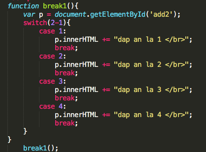
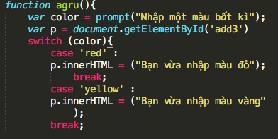
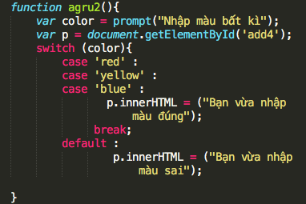

Break
Break sẽ giúp chương trình thoát khỏi lệnh switch
Code
Out put
Nếu bạn không thêm lệnh Break thì chương trình sẽ tiếp tục kiểm tra và chạy tiếp ở case tiếp theo.
Quy trình chạy
Nếu kết quả tham số có giá trị là 1 thì những đoạn code nằm bên trong case 1 sẽ được thực hiện, ngược lại nó sẽ nhảy xuống case tiếp theo. Lúc này nếu nó có giá trị là 2 thì những đoạn code trong case 2 sẽ được thực hiện, ngược lại nó kiểm tra tiếp xem còn case nào không. Nhận thấy không còn case nào nữa nên nó sẽ kiểm tra có lệnh default không? Vì có lệnh default nên nó sẽ chạy đoạn code trong lệnh default đó rồi thoát khỏi switch case.
Liên kết với biến từ người dùng
Trường hợp này nếu bạn nhập một màu khác với màu đỏ (red) và vàng (yellow) thì sẽ không có thông báo gì.
Code
Trường hợp gom case
Code
Cái kết có hậu <3
Để xử lý cho một trường hợp ngoại lệ nào đó thì ta sử dụng lệnh default.
Nếu nhiều nhánh cùng xử lý chung một đoạn code thì ta sẽ bỏ đi lệnh break ở bên trong, như vậy nó sẽ chạy luôn case ở phía dưới mà không cần kiểm tra điều kiện.